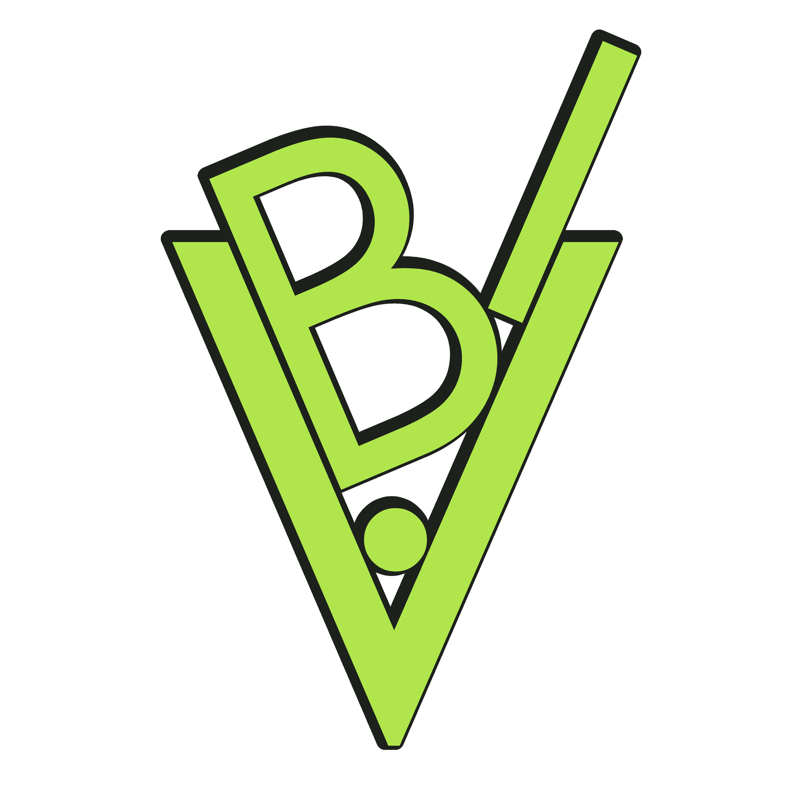

    <nav class="navbar navbar-expand-lg navbar-light" style="background-color: #C2DA91;">
        <div class="container-fluid">
            <a class="navbar-brand" href="welcome"></a>
            <button class="navbar-toggler" type="button" data-bs-toggle="collapse" data-bs-target="#navbarSupportedContent" aria-controls="navbarSupportedContent" aria-expanded="false" aria-label="Toggle navigation">
            <span class="navbar-toggler-icon"></span>
            </button>
            <div class="collapse navbar-collapse" id="navbarSupportedContent">
                <ul class="navbar-nav me-auto mb-2 mb-lg-0">
                    <li class="nav-item">
                      <button onclick = "switchPage('choose_search.html')"class="searchButton btn rounded-circle" type="submit"><i class="bi bi-people-fill" style="color: #37401C;" title="Pretraga korisnika"></i></button>
      
                    </li>
                    <li class="nav-item" >
                      <button onclick="switchPage('search_act.html')" class="searchButton btn rounded-circle" type="submit"><i class="bi bi-flag-fill" style="color: #37401C;" title="Pretraga aktivnosti"></i></button>
                    </li>
                  </ul>
            
            <ul class="navbar-nav me-auto mb-2 mb-lg-0 mx-right">
            
                
            </ul>
            <div class="d-flex">
                <button class="searchButton btn" type="submit">Obriši</button>
            </div>  
    
          </div>
        </div>
      </nav>
